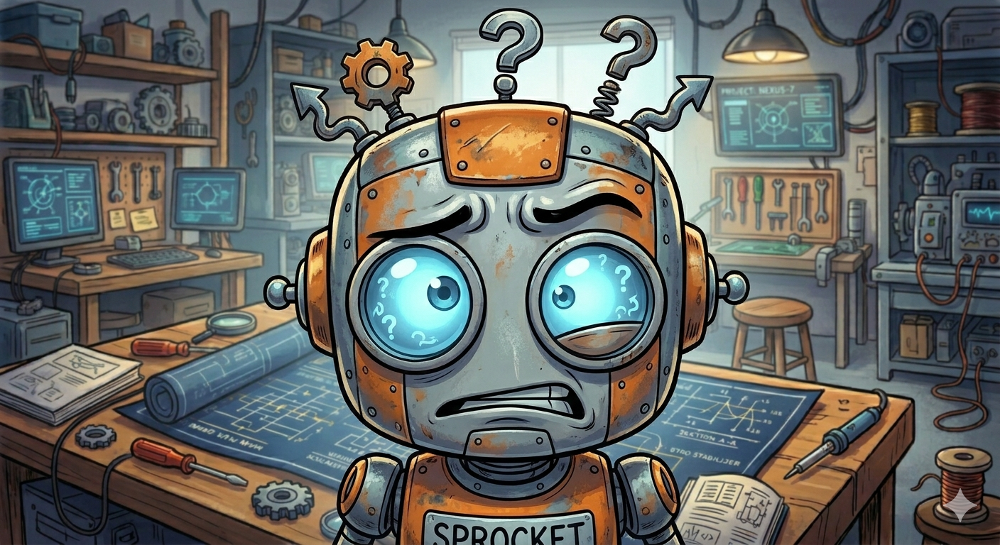
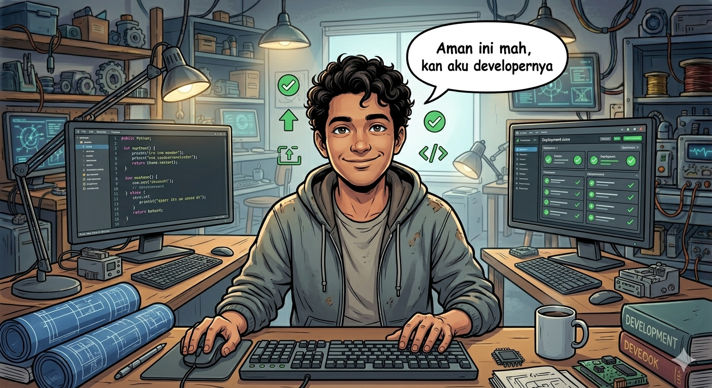

← Kembali ke Halaman Utama
Maliki
b
Catatan & Artikel Terbaru
Berbagi insight seputar QA Automation dan realitas dunia Teknologi.

Jangan Buru-Buru Pakai Automation Kalau Aplikasi Jauh dari Stabil

Kenapa Developer Nggak Boleh Ngetest Aplikasinya Sendiri?